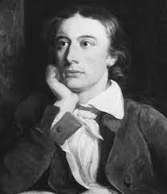

"A Romantic poet of exquisite sensitivity, crafted verses that embraced beauty, melancholy, and the transient nature of human existence."
John Keats, a luminary of the Romantic era, was born in London in 1795 and left an
indelible mark on English poetry despite a brief life cut short by tuberculosis
at the age of 25. His poetic legacy is characterized by a deep appreciation for
beauty and an exploration of the profound complexities of the human experience.
Keats' odes, such as "Ode to a Nightingale" and "Ode to a Grecian Urn," exemplify
his ability to merge lush imagery with philosophical depth, capturing the fleeting nature of joy and the enduring impact of art. His emphasis on "negative capability," the capacity to embrace uncertainties and mysteries, remains influential. Keats' work continues to resonate for its emotional resonance, artistic richness, and his
poignant exploration of the transient beauty that defines the human condition.
